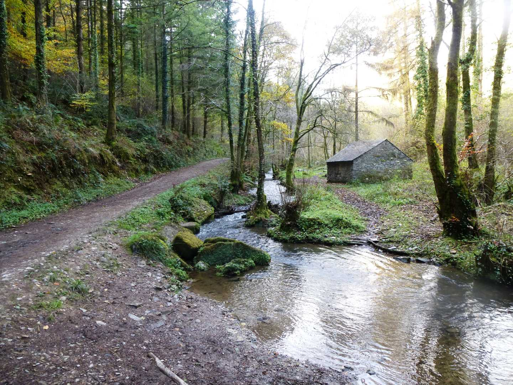
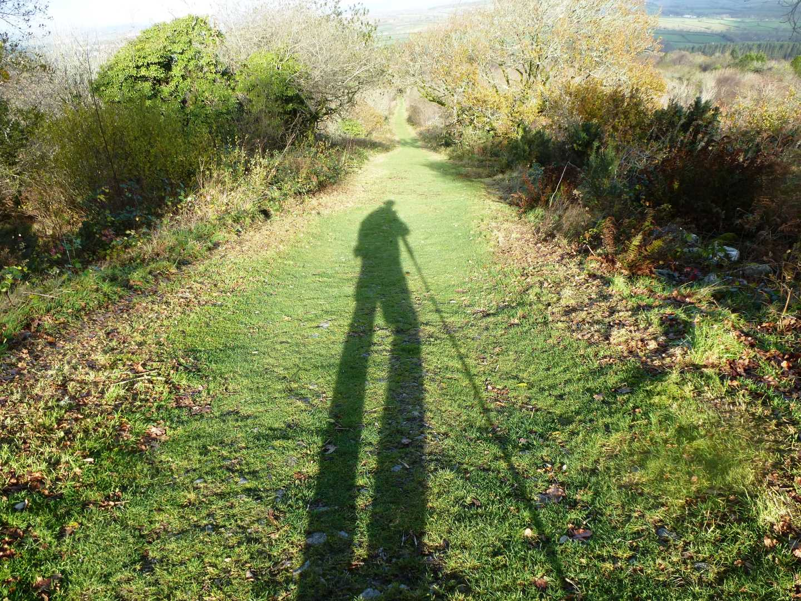

Start Ref: 3835 7130
End Ref: 3835 7130
Distance: 7 miles
Time: 2.5hrs
For this walk, we start in the small car park on the Western edge of the hill, and turn our left shoulder to the hill as we follow the road North towards Monkscross. At the crossroads go straight across and then ponder why we are walking over a bridge with nothing underneath (there was an old railway here). Carry on down the road until we come to a left turn, and take this. All along this road we will be greeted with views out across Dartmoor, until it drops down into the shelter of the evergreen trees and the valley bottom.
Here we will see a spot where we could also park (if we wanted to start from a different location), but more importantly there is a lovely ford to cross – I`m a sucker for fords!
Cross over the little bridge – or be a devil and run through it if the level is low – and then on through the gate opposite that brings us on to the Tamar Valley Discovery Trail. This trail is a national trail, but the Duchy of Cornwall are eager to point out that this is actually a Permissive Route.
The path is now level and trees overhang us as we follow the pretty, babbling stream, and hides a multitude of mining heritage buildings, and just before we reach Old Mill we will see the old Levell, crossing the stream. Back on to the road, we turn left (SW) and then immediately past the first house, we are back on the footpath on our left (S) as we start to head up a rather muddy track (that my niece, who insists on wearing white trainers whenever we go walking, would not be impressed with). This path is just wide enough for older tractors and cattle – hence why it is probably so muddy.
After a short climb, we come to a narrow road which we again cross and we are now on a drier path with stone run offs crossing it at regular intervals. After a few hundred meters the path bends sharp right (W) which we have to follow. However, there is an interesting stile on the corner, which I would love to investigate, but sadly there is no right of way on the other side.
A few hundred meters more and we are back on the road and heading left (SE) uphill until we reach a T junction. At this junction we turn left and the entrance to Kit Hill is on our right. This entrance is described as Kit Hill Incline. This gives us a clue as to what is in store, and I have to admit to stopping a couple of times (purely to take in the view, you understand!). This path leads us up to the old quarry, and then around to the right (W) before bringing us through a swing gate and suddenly we are at the summit and its impressive structures.
After admiring the view, which is extensive on a clear day (Davidstow, Brown Willy, Cheesewring, High Willhays, Plymouth Sound etc.,), we then head down the path which follows by the side of the road, which allows you to drive all the way to the summit! In a SE direction, and after about ten minutes we are back at the car.
Kit Hill is an interesting hill. Its name is taken from Old English, which in turn was taken from Cornish (Bre Skowl), and means Hill of the Birds of Prey. It also has impressive earthworks, a civil war folly, not to mention an impressive chimney (clad in scaffolding when I was last there), a little flooded quarry and what appeared to be a stone covered leat near the top.
The views here, cannot be underestimated and thankfully there are trig points which allow us to know what we are looking at, and the hill itself is well worth spending an hour or so just walking around. I hope that you enjoy this walk as much as I have.